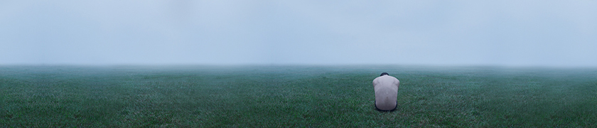

2016-08-11
700年历史最美野长城被抹平 文物局回应合理合法
小河口野长城地势险要 但拥有原始森林景观长城被森林掩映敌楼上长着百年青松气势雄伟最美
野长城竟然被人用...

2016-08-11
万里挑一的选址 FAST为何选择这个"窝"里建
世界最大单口径射电望远镜今天在贵州省平塘县正式投入使用这一500米口径的球面项目选址科研
团队负责人...

2016-08-11
6平方米“蚁房”都要抢 楼市疯狂到不管硬伤
最近，深圳楼市的“头条”被一种6平方米的“蚁房”所霸占。不过，6平方米“蚁房”的
故事还在继续：或引申出“调查门”
2016-08-11
房地产对A股上市公司收入贡献至少一半以上
国家金融与发展实验室资本市场与公司金融研究中心发布《2016年上半年A股上市公司盈利分析报告》指出，上半年样
本上市公司营业收入同比增加3046.46亿元
2016-08-11
成都已行辟谣楼市谣言 楼市反而越发激进
浙江客户一次性买下60套房的谣言刺激成都楼市，购房者恐慌性入市，开发商乘机大幅涨价，尽管这个事实
被否认，但是成都楼市却并没有安宁下来，反而越发激进
COPYRIGHT (©) 2017 mo004_813 平面设计类型网站